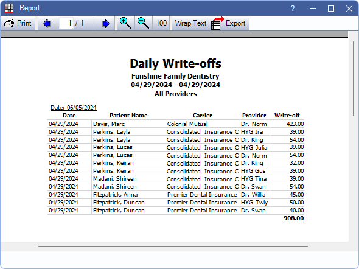

Daily Write-off Report
The Daily Write-off Report lists write-offs by patient for a single date or date range.
In Standard Reports, in the Daily section, click Write-offs.

To control user access to this report, see Report Setup: Security Permissions.
Filters
Set the report criteria and filters before running the report.
Calendar: In the first calendar select the start date. In the second calendar select the end date. The date range defaults to today's date.
Providers: Select the providers to include. Check All to include all listed providers.
- Filters by provider attached to the Claim Procedure.
- Users without the Daily - View All Providers permission only see the provider associated with their User and the All checkbox is disabled.
- Users must have the Daily - View All Providers to access the full provider list and utilize the All checkbox.
Show Insurance Write-offs: Determines the date write-offs are applied. See Show Insurance Write-offs for more details.
- Using insurance payment date: Apply write-offs on the date the insurance claim is received (Receive Claim).
- Using procedure date: Apply write-offs on the day the procedure is completed.
- Using initial claim date for write-off estimates, insurance pay date for write-off adjustments: Apply write-off estimates on the claim date and changes to write-offs on the insurance payment date. Includes additional columns on the report. See below for details.
Clinics: Select clinics to include in the report. Check All (Includes hidden) to run the report for all clinics.
- Filters by clinic assigned to the claim procedure.
- If user is restricted to specific clinics, only accessible clinics are listed. When checking All (includes hidden), results include all clinics user has access to, including those marked hidden; results do not include clinics user is restricted from or write-offs not assigned to a clinic.
Report
Click OK to generate a print preview of the report. The resulting report changes depending on the selected Show Insurance Write-offs option. Below is an example of the report and descriptions of each column on the report.
- Carrier: Typically the insurance carrier attached to the claim of the associated write-off.
- If more than one insurance carrier has write-offs entered for the same provider, patient, and date, the write-off total is grouped and only one carrier name is displayed.
- Provider: Provider attached to the claim procedure.
- Clinic: Clinic attached to the claim procedure.
- Write-off: Write-off amount.
The following columns appear when Using initial claim date for write-off estimates, insurance pay date for write-off adjustments is selected:
- Write-off Estimate: Write-off estimate in the Claim Snapshot. Appears on the report on the initial claim date.
- Write-off Adjustment: Write-off adjustments from the insurance payment date (e.g., any change to the original write-off estimate).
- Write-off: Total of the Write-off Estimate and Write-off Adjustment columns.
- The Write-off column doesn't necessarily reflect the actual write-off if the date range of the report does not include the initial claim date and the payment date.
- Write-offs are totaled at the bottom of the report. For the date range: Write-off Estimate + Write-off Adjustment = Write-off